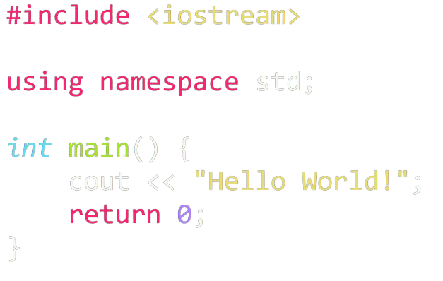
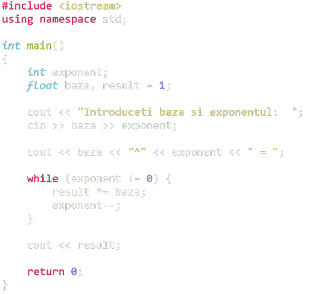
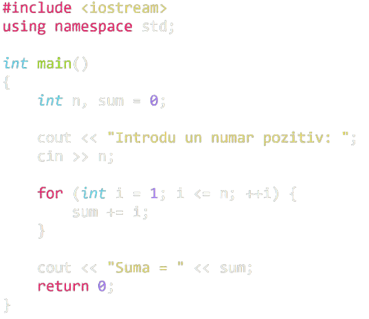

<body>
</body>
<html>
</html>
<h2>
</h2>
<p>
</p>
Exemple de cod C++



Limbajul C++
C ++ este un limbaj de programare de nivel general, orientat spre obiect,
de nivel mediu și este o extensie a limbajului C, care face posibilă
codificarea C ++ într-un „stil C”. În unele situații, codificarea se poate
face în oricare dintre formate, făcând din C ++ un exemplu de limbaj hibrid.
Cine îl folosește?
- Profesii și industrii:
-
Ingineri software C ++, dezvoltatori software C ++,
ingineri încorporați, analiști programatori
-
Folosit de angajatori în tehnologia informației, inginerie,
servicii profesionale, proiectare, control al calității și management
- Organizații majore: Google, Mozilla, Firefox,
Winamp, Adobe Software, Amazon
- Specializări:
Software de sistem / aplicații, drivere,
aplicații client-server, firmware
încorporat
Ce face ca învățarea lui să fie importantă?
-
Limbajul C ++ este utilizat pentru a crea programe de calculator și software pachet,
cum ar fi jocuri, aplicații de birou, editoare grafice și video și sisteme de operare.
-
Sistemul de operare Blackberry este dezvoltat folosind C ++.
-
Cea mai nouă suită Microsoft Office a fost dezvoltată folosind C ++.
-
Caracteristici:
-
Deseori primul limbaj de programare predat
-
Procesare rapidă și mecanism de compilare rapid
-
Biblioteca standard robustă (STL)
De unde a început?
Bjarne Stroustrup de la Bell Labs a dezvoltat C++ (inițial denumit C cu clase)
în anii 1980, ca o serie de îmbunătățiri ale limbajului C. Limbajul s-a extins
semnificativ de-a lungul timpului, iar C ++ modern are acum caracteristici
orientate pe obiecte, generice și funcționale și facilități
precum manipularea memoriei la nivel scăzut.